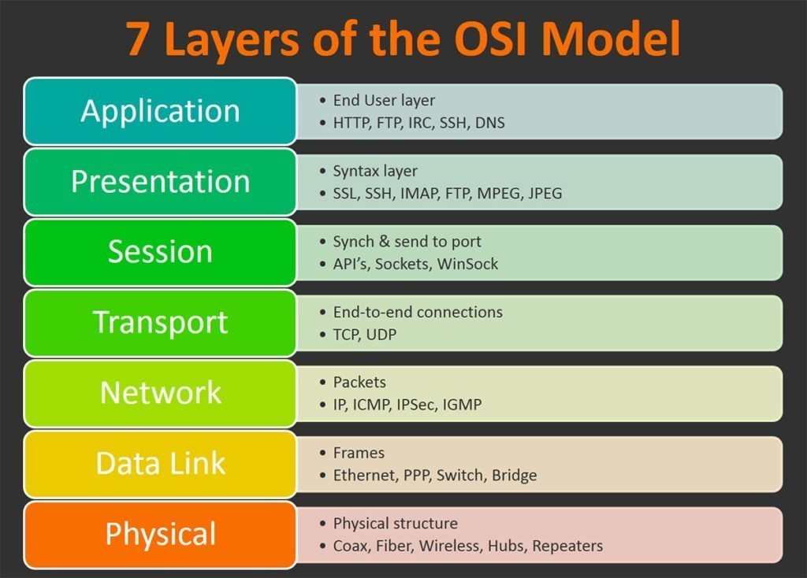

Discover the ins-and-out of the IT career from an experienced professional's testimony.
During the Interview, Jason took the liberty of giving us an interesting take on what it’s like to be a Network Engineer, throughout the interview he gave exclusive coverage of his daily life and what he spends most of his time on as a Network engineer plus the challenges that are faced on a daily basis with tools and communication, as well as, the difficult path taken to become a Network engineer and some great advise on the pathway to becoming a Network engineer.
Jason’s position working as a Network Engineer for the South Australian Government is considered to be a Network Assurance role, which means that he is in charge of ensuring that over 900 educational sites across South Australia remain with internet network usage, because Jason specifically works with education his role is considered be an essential service, many student rely upon Jason’s skills to keep the network infrastructure in good health so students can continue to study online with ease. Part of his role includes monitoring resolving faults when they occur while trying to be proactive to avoid complete network outages for sites.
Although there are a few tools in a network engineers toolbox, the main tools that Jason uses in his role as a Network Engineer are his laptop, a console cable, and a terminal emulator. While there are several terminal emulators on the market Jason uses are specific rules and policy-based routing in place to enhance student wellbeing and the network experience; these include web content filters to make sure kids can't get to undesirable websites while at school. Another specific tool that is in use is the “iPerf”. IPerf is a tool that is used by a Network Engineer to troubleshoot the performance of a network. iPerf3 is a tool for active measurements of the maximum achievable bandwidth on IP networks. It supports tuning of various parameters related to timing, buffers and protocols (TCP, UDP, SCTP with IPv4 and IPv6). For each test it reports the bandwidth, loss, and other parameters. The iPerf3 tool sees a lot of use during a network engineers' daily life, just like the basic internet speed test like you do at home, Jason is constantly using this tool to ensure the networks he manages are able to support the learning outcomes for students. primarily SecureCRT and Putty. Jason works mainly with Cisco hardware which is used as the backbone of the network for over 900 individual schools, public high schools, primary schools, kindergartens and preschools, this hardware connects the schools into a private WAN with the use of Telstra’s wide area network. The schools don't connect directly to the Internet, rather they connect to a private fibre optic network which makes a network engineers life a whole lot easier to troubleshoot and manage. This type of network is called a Hub and Spoke design, with a central Hub in the Adelaide CBD, and each school site acting as a spoke. An example would be a recent upgrade of a schools network involving the installation of a new Cisco layer three switches and a new subnet so students can bring their own laptop or tablet from home, a personal device or a device not owned by the school to connect to the internet on a different access point, these types of upgrades protect the main network from security breaches from external devices, also within the subnet there.
As of this year, working from home because of COVID-19 restrictions has become standard across this industry, which is basically seen Jason’s large office building turned into a ghost town. There are several layers of interaction and communication with other personnel within this field of work, a main part of the role requires constant contact with Telstra. As vendors, they provide a wide area network that connects educational institutions to a private fibre optic network. By having access to a Telstra portal, a test can be made on the fibre link to see if the network is down. In the event of an issue with the network, part of the role is to communicate and report directly with the school's director/principal, as well as the school’s IT personnel to resolve and trouble-shoot issues within the school's network or firewall. On the corporate side of things, communication with corporate managers and the chief information officer also needs addressing, as updates, issues and outages at the educational institutions need to be accurately logged and recorded. Jason utilizes the ITIL compliant incident and request tracking software, ServiceNow to manage all open incidents.
As part of the role, if further actions like repairs or upgrades are needed on the network infrastructure, Jason would have to send out an infrastructure support officer to go out to the site and be the remote eyes and hands at a site, who in turn reports back directly to the Jason to provide support on completing the repair or upgrade.
At the beginning of the day, the first task is to check the monitoring tool for any sites that may have gone down overnight, upon finding which sites have gone down overnight an investigation is initiated. Occasionally an outage is simply caused by a loss of power and It's not necessarily a network fault, like everything else, routers and switches and NTUs require power to operate. Following the check-up, a report must be generated every morning for management, including team leaders of other areas, to ensure everyone is aware of the status of our sites. From there, an investigation is initiated into any issues related to sites that are down, plus throughout the day other issues or requests may be sent through by the service desk team.
An incident in ITIL terms is something that should be working, but has stopped, or is degraded in how it is working, and a request is simply a request for something to be changed. Incidents are things like experiencing some slowness in DNS resolutions, or web sites loading, or even being unable to resolve certain websites. An example of an incident that recently occurred was when one of the load balanced Cisco IronPort mail appliances went down, so some sites were unable to send outbound mail.
Coming into the afternoon, there may be some room to squeeze in some extra job requests, for example, a site may have a new DHCP server being installed, and we have to update the IP helper configuration on their router or they might be installing an updated reverse proxy server, or LMS server (Canvas is an LMS server for reference) and need firewall rules updated/changed or removed. Incidents always take priority, as normally a site is feeling some immediate effect from this, whereas general requests take anywhere from 2 to 4 weeks for completion.
Firstly, communication is always a challenge for a Network engineer. There can be a considerable difference in knowledge levels between the different stakeholders, and a network engineer needs to be able to communicate to stakeholders at all levels. There are IT technicians who understand all the technical jargon, and on the other hand, you might have to simplify and explain the technical side to educational personnel as they may not be that familiar with computers. Therefore, it is considered a challenge to ensure that when you're talking to people of different skill sets that you can actually explain yourself and explain what's happening and what actions you're taking to resolve a problem in a diverse sort of way.
Then there is fault-finding, it is also very challenging, but in a different way. Putting it plainly, it’s almost like doing a crossword puzzle but with networking, it is challenging to narrow down what is wrong with a network and to then to come up with a solution to resolve it. For example, there was a job recently where Jason needed to engage with one of Telstra’s engineers in Melbourne and go out to a site that was suffering performance problems with their link and run a test in conjunction with Telstra. The iPerf tool was used to run a sustained throughput test, where the fibre connection, with policing disabled, was wound up to around about 950mb/s to prove that it could sustain that level of speed. Performing this type of test is destructive to the site, as the internal network is completely disconnected from the link, to ensure no other traffic is present to influence the result. In this instance, the performance degradation was proven to a VMWare network adaptor using the incorrect driver.
Some may ask what it takes to become a Network Engineer, with 13 years’ experience Jason recommends the best pathway to becoming a network engineer is not only to study, but to get some real hands on experience by experimenting, creating and practicing in a real networking lab environment, study alone is not going to make you a network engineer immediately, however it will start to form some foundations for you, after all you are going to need some hands on experience to back up these degrees and certifications.
By study, Jason doesn’t necessarily mean a degree, diploma or certificate IV or anything like that, but rather some specific study directly in the Networking field, So there is a framework called the OSI model, which is essentially something that developers should use so they can have communications across a network, it is broken down into Seven layers, this is really a base level education that probably the best path is to really get into it, really understand the way traffic flows by understanding the OSI model and how it works
By obtaining a CCNA (Cisco Certified Networking Associate) qualification, this will basically step you through the fundamentals on how a network works, how a computer can talk to another computer somewhere else in the world, and the best part of learning networking is that it is not device specific or operating system specific.
A good way to study for that is to build yourself a lab environment, there is no need to buy a lot of expensive fancy equipment, as there are now also a bunch of emulators available that do the same task. Cisco themselves produce a couple of different emulators that you can sign up with, so you can gain that hands-on lab experience without needing to purchase the hardware to do it, the main two that Jason recommends are Cisco modelling labs and GNS3.
Cisco Modelling Labs allows you to reduce your lab costs, this software allows you to run at home a lab environment where you can create virtual routers, switches and firewalls to experiment with, also (As explained on the GNS3 website, you can download software that can help you emulate a networking lab environment, GNS3 can help you prepare for certification exams such as the Cisco CCNA, but also help you test and verify real world deployments, so you can use the GNS3 emulator today to help you do the same without paying for expensive hardware.
The best path is to really get into it, really understand the way traffic flows by understanding the OSI model and how it works, overall it boils down to getting some real hands on experience so you can back up these degrees and certifications, and start your pathway to a career in networking.